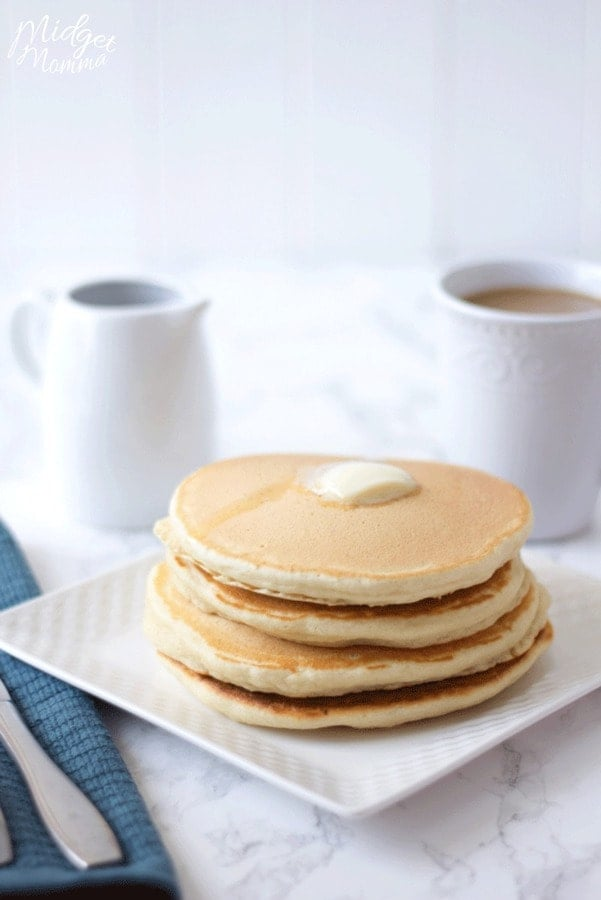

Home
Pancakes

Ingredients
- 1 1/2 cups of all purpose flour.
- 3 1/2 teaspoons of baking powder.
- 1 tablespoon of sugar.
- Salt to taste.
- 1 1/4 cups of milk.
- 3 tablespoons of butter.
- 1 large egg.
Steps
- Mix the ingredients together in a bowl until there are no lumps.
- Heat the pan to medium heat.
- Pour some batter into the pan. Flip once the pancake is structurally sound.
- Remove pancake once it is cooked through, generally after a couple minutes on each side. Repeat until all your batter is used.
- Enjoy!